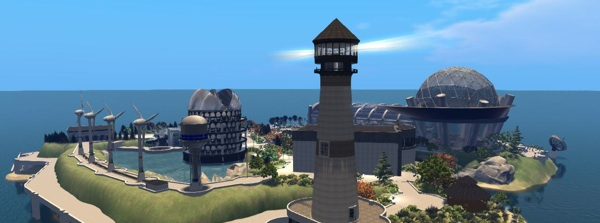

Live your Dream!
WhiteCore is a free virtual worlds system. Avatars can move through virtual worlds to meet others in 3D or to explore the objects and creations from other citizens. Members can create their own worlds, without any limits. This grid is based on the Simulator-Software WhiteCore, an open source project.
Free, democratic and independent!
There are no restrictions regarding the construction of buildings (prims, sculpties, etc.) On the contrary: the grid operators, as well as the residents, give a lot of buildings, furnishing items, clothes etc. as freebies to other citizens. Thus, a new resident can rapidly build its own inventory. There are many freebie shops available on different regions, which are accessible via teleporting.
Open for All!
Everyone can create their own worlds (regions) on the Grid, free of charge. Also, there is also the possibility to rent ready-to-run virtual worlds for a low cost if desired.